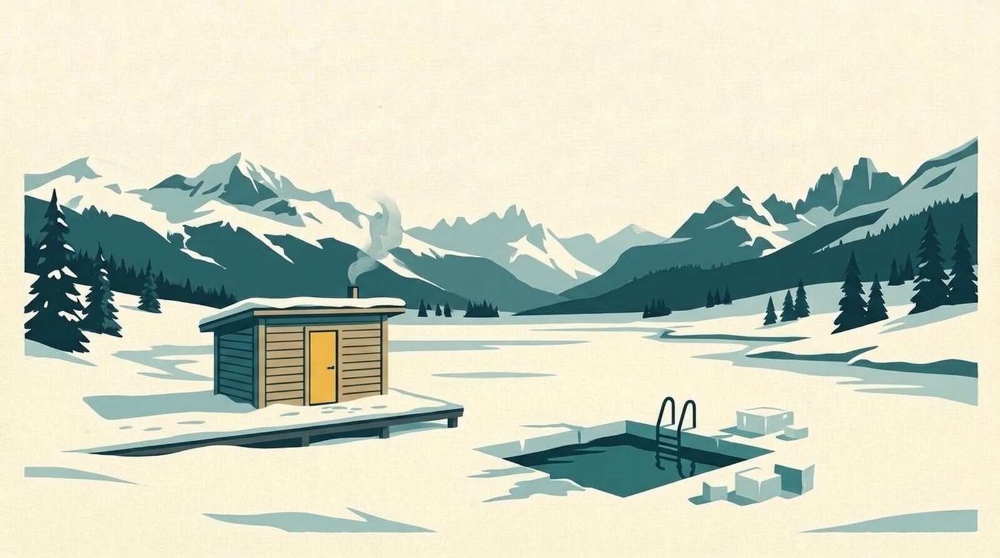

En bref
On parle de bain glacé quand l’eau est sous 5 °C. Graubünden Ferien cite cinq « Eisbadis » : Arosa (la première de Suisse, atelier quotidien), Davos, Plaun da Lej sur le lac de Sils, Saint-Moritz et Davos Munts. Pour le premier bain : avec un professionnel, en groupe, et seulement en bonne santé.
Les Eisbadis
- Arosa : la première Eisbadi de Suisse, un atelier chaque jour pour débuter, une roulotte-sauna pour se réchauffer.
- Davos : cours de Markus Blum dans le bassin au bord du lac de Davos, et pour les confirmés un trou dans la glace du lac.
- Plaun da Lej (Engadine) : de décembre à Pâques, tous les jours de 9 h à 17 h dans le lac de Sils, sauna de 4 à 6 places sur la rive.
- Saint-Moritz : derrière le manège, dans le lac gelé ; vestiaires à l’Eisarena Ludains, bain accompagné avec St. Moritz Outdoors.
- Davos Munts (Lumnezia) : sauna Loyly sur la rive, à réserver en ligne pour quatre personnes au plus.
À respecter
- Pour le premier bain, se faire guider et accompagner par un professionnel.
- En groupe : plus agréable et plus sûr.
- Seulement en bonne santé : déconseillé en cas d’hypertension, de diabète, de maladie cardiaque ou vasculaire ; en cas de doute, demander à son médecin.
Pour aller plus loin : les 90 premières secondes, se réchauffer après, le bain d’hiver au lac de Silvaplana.
Rien ici ne remplace un cours de secourisme ni l’avis d’un médecin. Urgence : 144 (ambulance), 117 (police), 112 (international).
L’eau du Léman en ce moment
La température de chaque plage est dans l’app Mon Lac, mise à jour toutes les trois heures.
Avertissement. Cet article donne des informations générales tirées des sources citées ; il ne remplace pas un avis médical. La baignade en eau froide sollicite fortement le cœur et peut être dangereuse : demandez conseil à un médecin avant de commencer, en particulier en cas de problème cardiaque, de tension ou de grossesse. Ne vous baignez jamais seul et respectez les consignes des sauveteurs. Chacun pratique sous sa propre responsabilité ; en cas d’urgence, appelez le 144 en Suisse ou le 112.